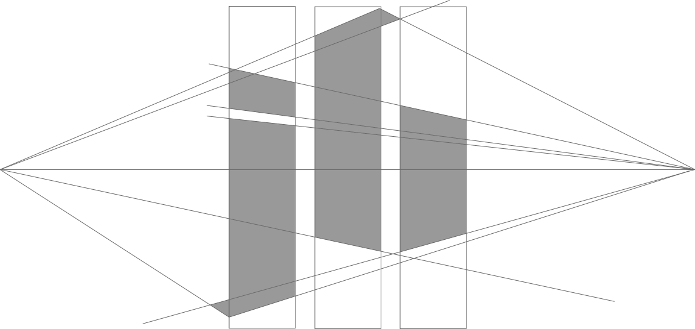
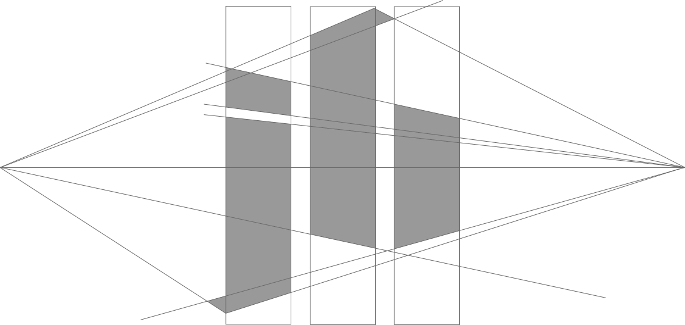

About Me
Hello! My name is Jordan Buice (/bais/) and this is my website. Contents may range from personal to professional. Color scheme is subject to change. Thanks for stopping by.
I'm a User Experience generalist, looking to apply my skills in UX/UI research, analysis, and design. I recently graduated from the University of Georgia with a Bachelor of Arts in Cognitive Science (with emphases in Computer Science and Psychology) and a certificate in New Media.
Resume
© Jordan Buice 2020

